Des pavés de la Vieille Ville au Château, en passant par le Pont Charles, Josefov et la légende du Golem — sans oublier ce qui se passe sous les pavés.
Cliquez sur un lieu pour accéder directement au récit correspondant.
● 7 lieux→ itinéraire photo⌁ carte interactive
Cliquez sur un point • zoom + / − • glissez pour vous déplacer
PRAGUE · WEEK-ENDLes 7 étapes
Le week-end en un coup d’œil
7étapes
53photos
1ville
ÉTAPE 01
Vieille Ville
Pavés, façades pastel et Maison municipale.
ÉTAPE 02
Horloge astronomique
L’Orloj et la tour de l’ancien Hôtel de Ville.
ÉTAPE 03
Pont Charles
Charles IV, le Calvaire et les statues baroques.
ÉTAPE 04
Golem & Josefov
La grande légende de Prague et le quartier juif.
ÉTAPE 05
Château de Prague
Porte Matthias, cathédrale Saint-Guy et panorama.
ÉTAPE 06
Cimetière juif
Le cimetière juif et la mémoire du quartier.
ÉTAPE 07
Prague en mouvement
Sous les pavés : le métro et son escalator.
Récits du voyage
ÉTAPE 01
Les rues de la Vieille Ville
Dès les premiers pas, Prague vous avale. Pavés irréguliers, façades pastel, enseignes en fer forgé… On se croirait dans un décor de film.
La Maison municipale (Obecní dům) Ce joyau Art nouveau sur Náměstí Republiky marque l’entrée dans la Vieille Ville, juste à côté de la Tour poudrière.
La Tour poudrière (Prašná brána) L’une des treize anciennes portes de la ville, ancien dépôt de poudre à canon, qui ouvre le passage vers la Vieille Ville.
Rue Celetná L’une des plus anciennes rues de Prague, sur l’axe royal qui relie la Tour poudrière à la Place de la Vieille Ville.
Façades de la Place de la Vieille Ville Chaque maison a son style et sa couleur : un patchwork architectural accumulé sur plusieurs siècles.
Place de la Vieille Ville (Staroměstské náměstí) Au centre, le monument à Jan Hus, réformateur religieux tchèque brûlé en 1415, veille sur la place depuis 1915.
Maison à sgraffites, à deux pas de l’Hôtel de Ville Ce type de façade grattée en motifs géométriques est une signature du centre historique ; l’identification précise de cette maison reste à confirmer.
C’est ici que le voyage commence vraiment. Le bruit des valises sur les pavés, les conversations en dix langues, l’odeur du trdelník…
ÉTAPE 02
L’Horloge astronomique
La Place de la Vieille Ville est le théâtre permanent de Prague. Au pied de la tour de l’ancien Hôtel de Ville, l’Orloj continue de fasciner les foules chaque heure.
La tour de l’ancien Hôtel de Ville Vue depuis la Place de la Vieille Ville, avec l’horloge astronomique encastrée dans sa façade sud.
Au pied de l’Orloj Chaque heure pile, la foule s’arrête pour voir défiler les apôtres aux fenêtres de l’horloge.
La tour, en contre-plongée 171 marches mènent à la galerie panoramique, tout en haut.
Le cadran astronomique Installé en 1410, c’est la plus ancienne horloge astronomique encore en fonctionnement au monde.
Anecdote :La légende raconte que le maître horloger Hanuš fut aveuglé pour qu’il ne puisse jamais reproduire une horloge aussi parfaite ailleurs.
Arrivez 10 minutes avant l’heure pile pour voir les apôtres défiler, et prenez du recul : de près, on ne voit que la foule.
ÉTAPE 03
Le Pont Charles et ses alentours
Traverser le Pont Charles, c’est marcher sur 650 ans d’histoire. Construit sous Charles IV à partir de 1357, il relie la Vieille Ville à Malá Strana au-dessus de la Vltava.
La tour du Pont Charles côté Vieille Ville Considérée comme l’une des plus belles tours-portes gothiques civiles d’Europe, elle marque l’entrée du pont.
Charles IV devant le Pont Charles La statue néogothique de Charles IV, sur Křižovnické náměstí, à quelques mètres seulement de l’entrée du pont qui porte son nom.
Le Calvaire du Pont Charles Le célèbre crucifix du Pont Charles, entouré de son inscription hébraïque ajoutée en 1696, encadré par les statues de la Vierge et de saint Jean.
Sur le pont, au-dessus de la Vltava Trente statues et groupes sculptés jalonnent le parcours, entre ciel et rivière.
Musiciens sur le Pont Charles Un petit groupe de jazz installé face à la Vltava — la bande-son improvisée de toutes les traversées.
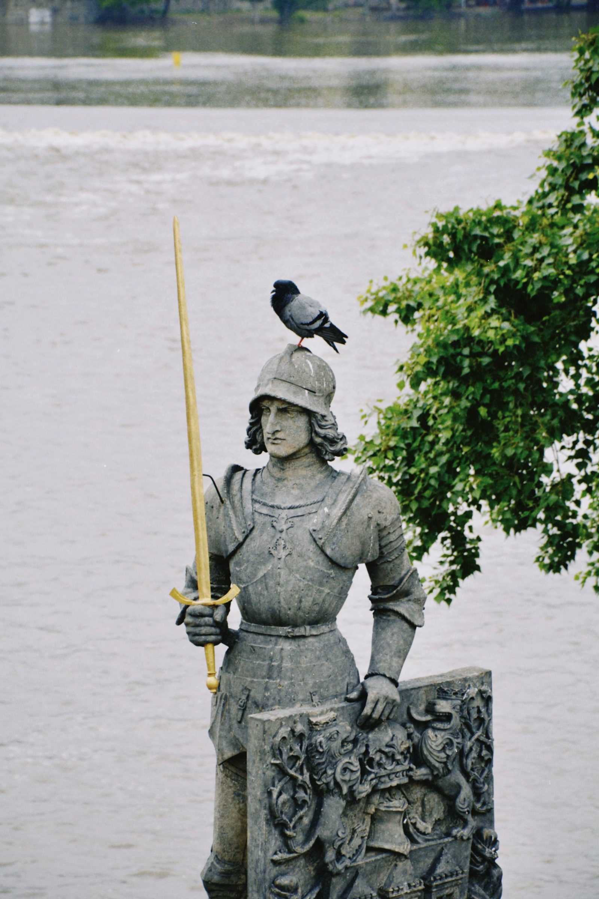
Le chevalier Bruncvík Cette statue veille sur la rive, épée levée : elle représente le héros légendaire tchèque Bruncvík et son épée magique, cachée dit-on sous le pont.
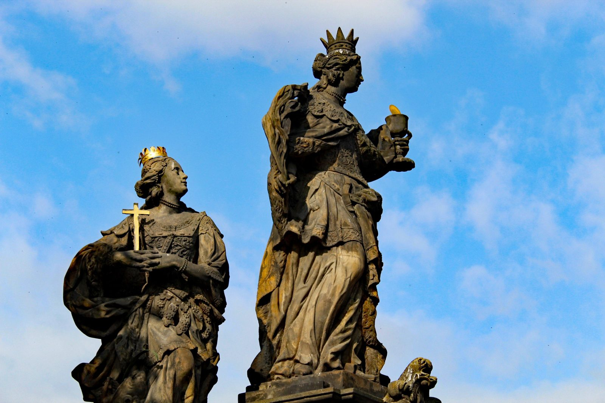
Deux des statues du pont Parmi les trente statues baroques qui bordent le parcours, chacune raconte sa propre légende ou son propre saint patron.
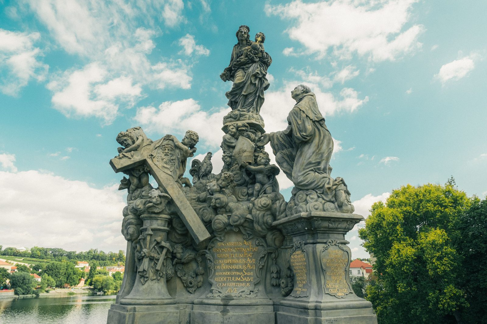
Un groupe sculpté du pont La Vltava et les collines de Prague en toile de fond, derrière l’une des nombreuses compositions baroques du parcours.
Le pont vu d’en haut Une perspective plongeante qui révèle toute la longueur du pont et le flot ininterrompu de visiteurs qui le traversent.
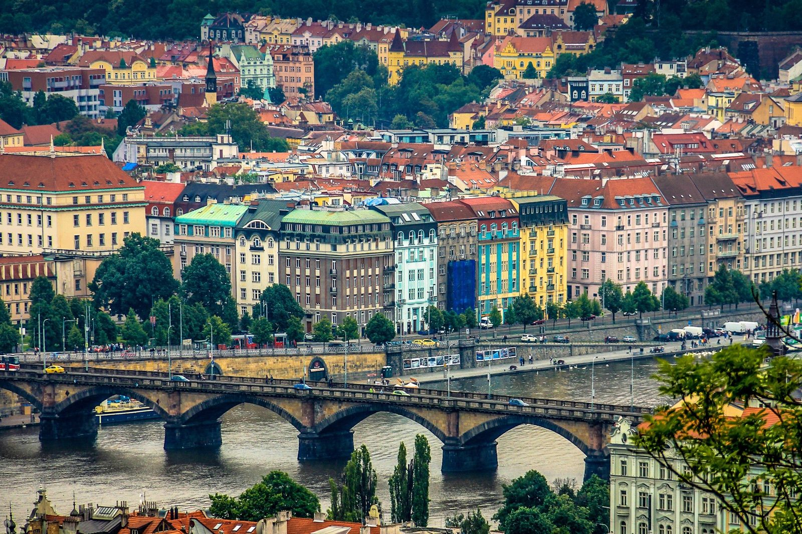
Prague et ses ponts Le Pont Charles n’est que l’un des nombreux ponts qui enjambent la Vltava au fil de la ville.
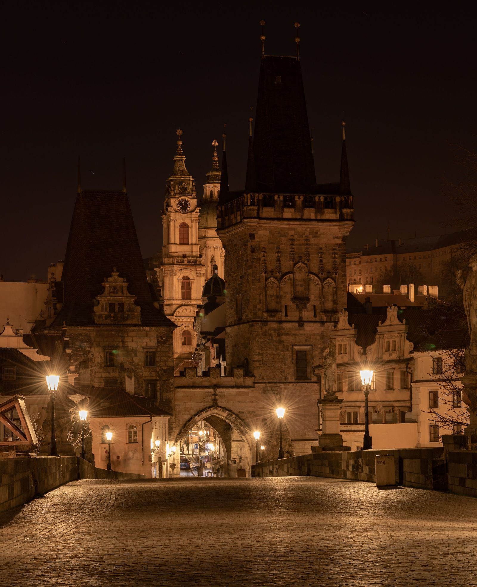
Les tours du pont, de nuit Côté Malá Strana, les deux tours gothiques prennent une allure différente une fois la nuit tombée et le pont déserté.
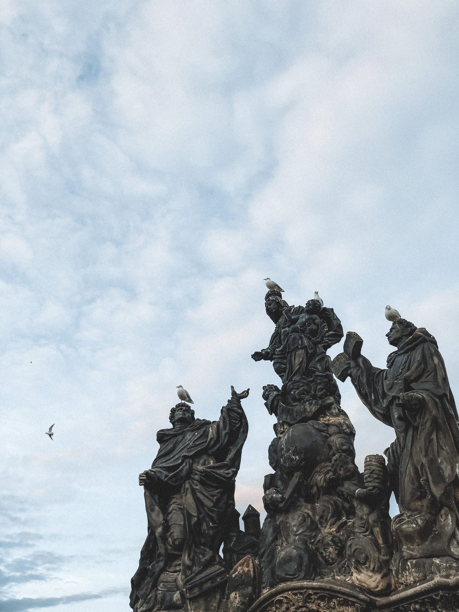
Silhouettes sous le ciel changeant Le temps de Prague varie vite, et les statues du pont prennent une allure différente à chaque éclaircie.
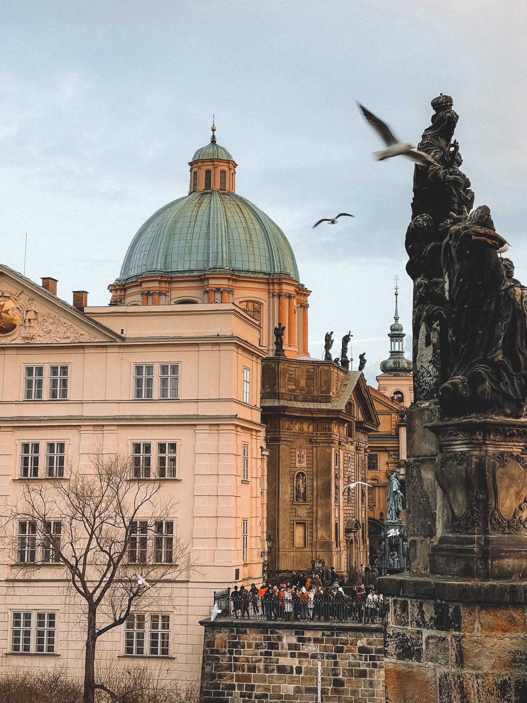
En arrière-plan, le dôme de Malá Strana Les statues du pont se détachent devant les coupoles et les toits du quartier de Malá Strana.
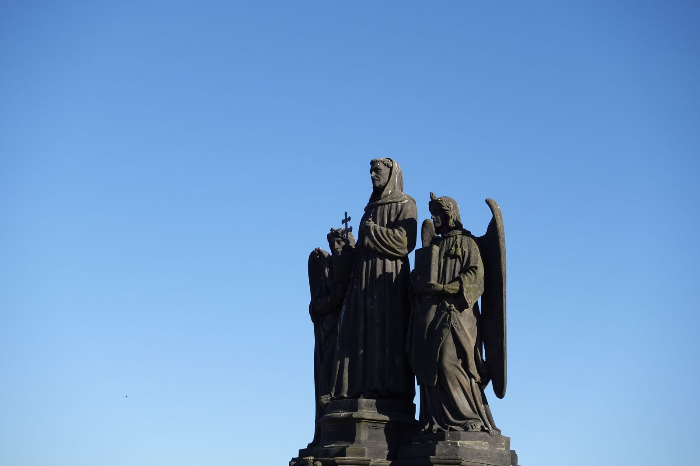
Un groupe d’anges sculptés Encore une des nombreuses compositions religieuses qui font du pont une véritable galerie de sculpture baroque à ciel ouvert.
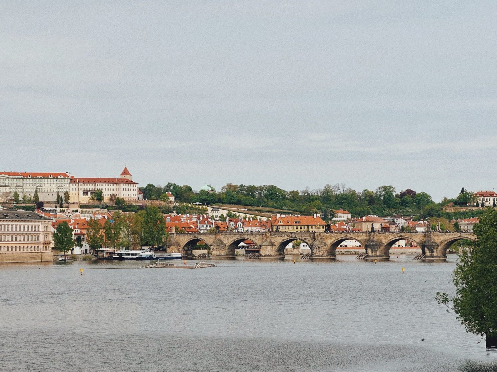
Le pont dans son ensemble Vu depuis la rive, le Pont Charles déploie toute son architecture de pierre au-dessus de la Vltava.
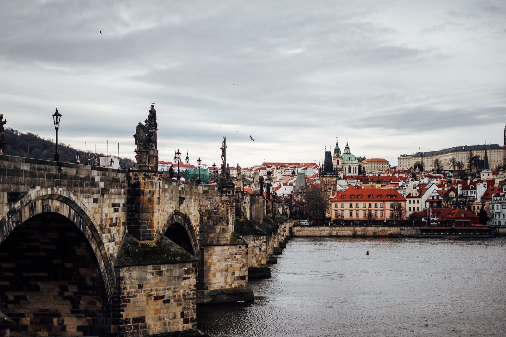
Les arches du pont Seize arches de pierre soutiennent le tablier du pont depuis plus de six siècles.
Histoire des statues :Les 30 statues et groupes sculptés du pont, pour la plupart baroques, forment une véritable galerie en plein air.
Venez au lever du soleil : le pont est presque vide, et la lumière sur les tours est incomparable.
ÉTAPE 04
Le Golem & le quartier de Josefov
Créé au XVIe siècle par le Rabbi Loew pour protéger la communauté juive, le Golem — cette créature d’argile — reste la légende la plus célèbre de Prague.
La Synagogue Vieille-Nouvelle (Staronová synagoga) La plus ancienne synagogue active d’Europe encore en fonctionnement. La légende veut que le Golem repose encore dans son grenier.
La statue du Golem Silhouette encapuchonnée et sans visage, dressée dans les rues de Josefov en hommage à la légende.
Dans les rues de Josefov Le quartier juif historique, entre synagogues, maisons bourgeoises et souvenirs de la légende.
Souvenir du Golem Une petite figurine en terre cuite, glaise trapue et visage à peine esquissé — la version de poche de la légende, telle qu’on la trouve dans les échoppes de Josefov.
Le Rabbi plaçait un shem — un parchemin sacré — dans la bouche du Golem pour lui donner vie, puis le retirait pour l’endormir. Certains disent qu’il repose encore là-haut, sous le toit de la Vieille-Nouvelle Synagogue.
ÉTAPE 05
Le Château & la cathédrale Saint-Guy
Monter vers le Château est un rite de passage. La Voie Royale traverse Malá Strana avant d’atteindre le plus grand complexe de château ancien au monde.
La Porte Matthias (Matyášova brána) Premier grand portail baroque de l’histoire d’Europe centrale, il marque l’entrée officielle du complexe du Château.
Cathédrale Saint-Guy — la façade Commencée en 1344, achevée seulement en 1929 : près de six siècles de chantier gothique.
La nef de la cathédrale Saint-Guy Une immense nef gothique, tombeau des rois et reines de Bohême.
Un vitrail de la cathédrale La lumière traverse les vitraux colorés et projette ses couleurs sur les pierres claires.
Vue depuis les hauteurs du Château Les toits rouges de Prague à perte de vue, avec la Vltava qui serpente en contrebas.
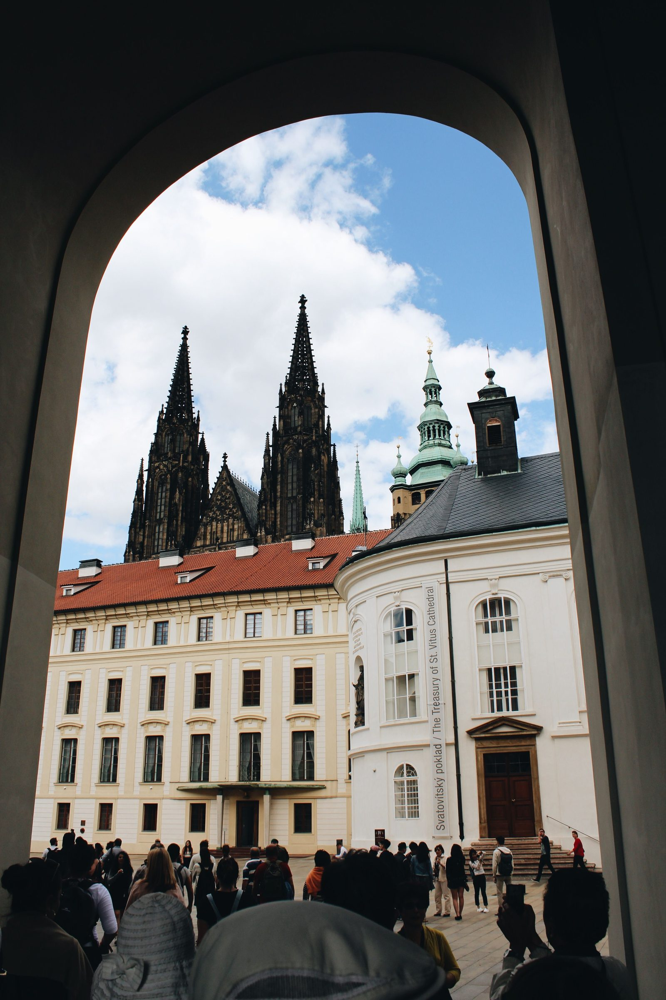
Première apparition de la cathédrale Depuis l’une des cours du complexe, une arche cadre soudain les flèches de Saint-Guy — l’un des passages les plus photographiés du Château.
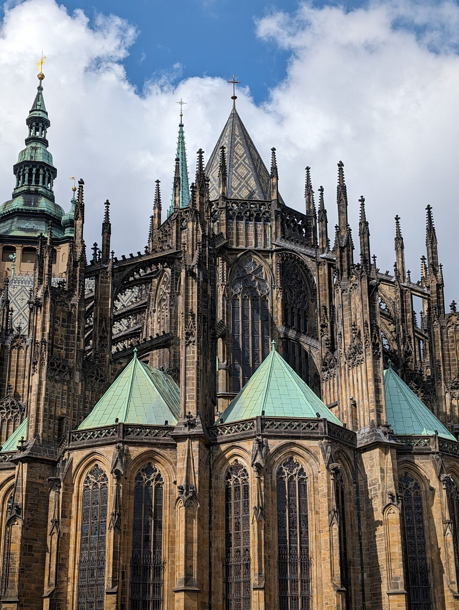
Dentelle de pierre Un gros plan sur les flèches et pinacles gothiques, sculptés avec une précision presque obsessionnelle.
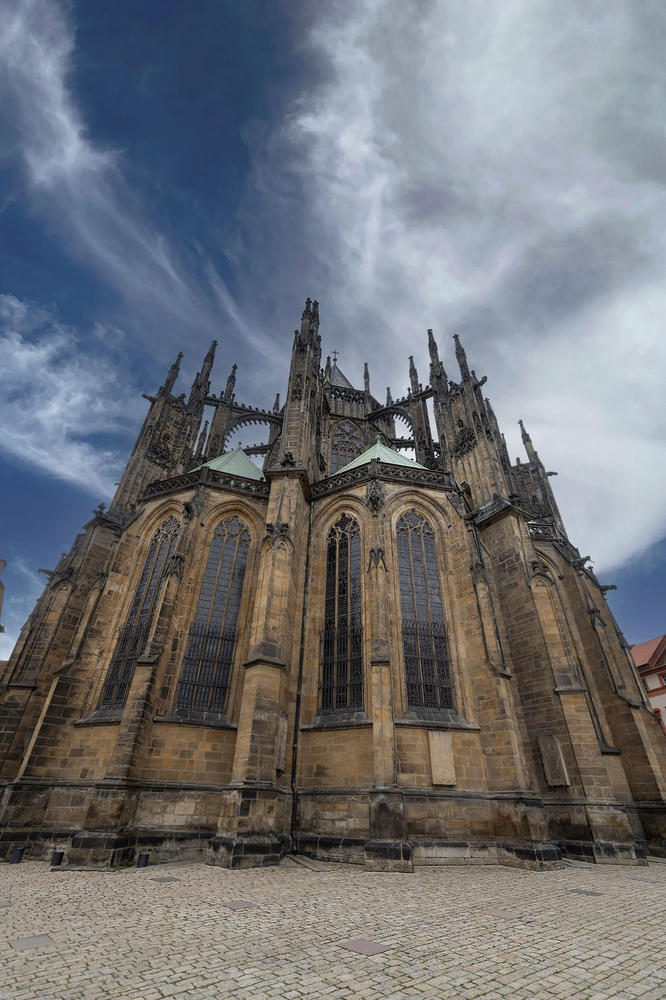
La cathédrale sous un ciel changeant À Prague, la météo peut basculer en quelques minutes — de quoi transformer complètement l’ambiance d’une même façade.
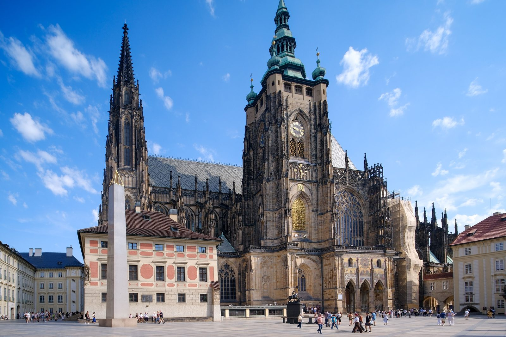
La troisième cour Un obélisque de granit, érigé en 1928 en mémoire des soldats tchécoslovaques de la Première Guerre mondiale, se dresse face à la cathédrale.
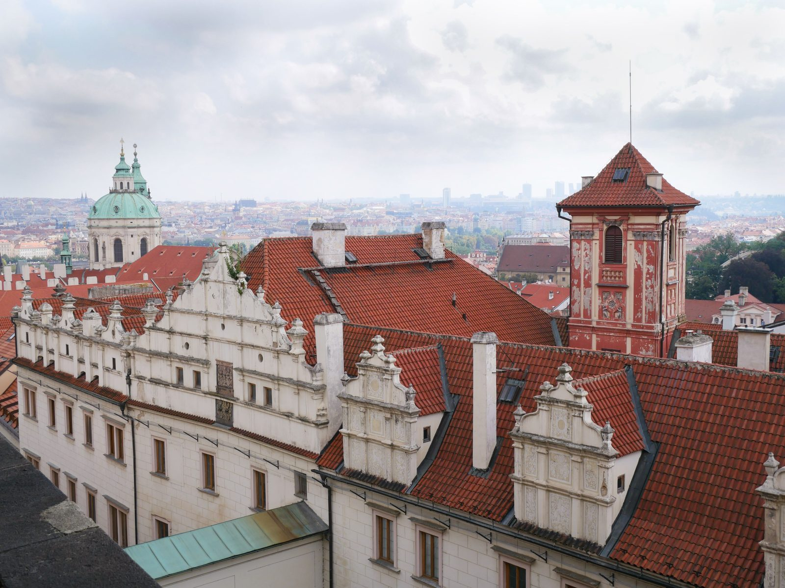
Malá Strana vue d’en haut Les toits rouges du « Petit Côté » et le dôme vert de l’église Saint-Nicolas, avec Prague qui s’étend à l’horizon.
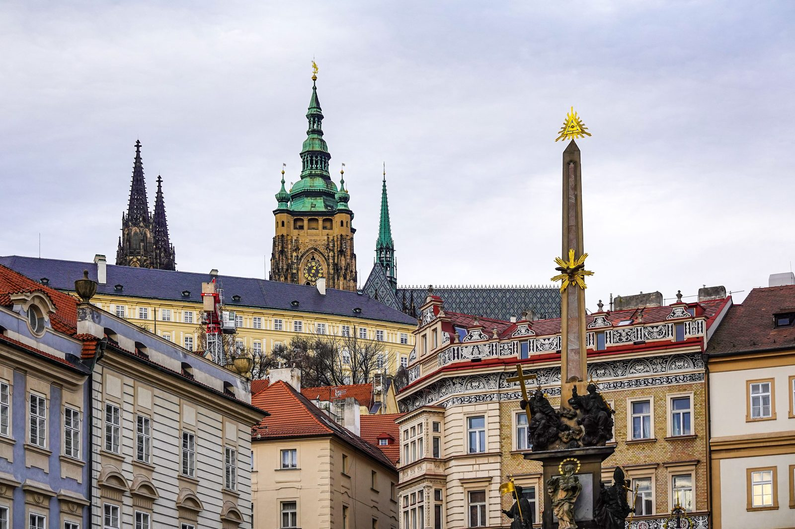
Une colonne mariale, tours du Château en fond Ce type de monument commémoratif, fréquent en Europe centrale, se retrouve un peu partout dans le paysage urbain de Prague.
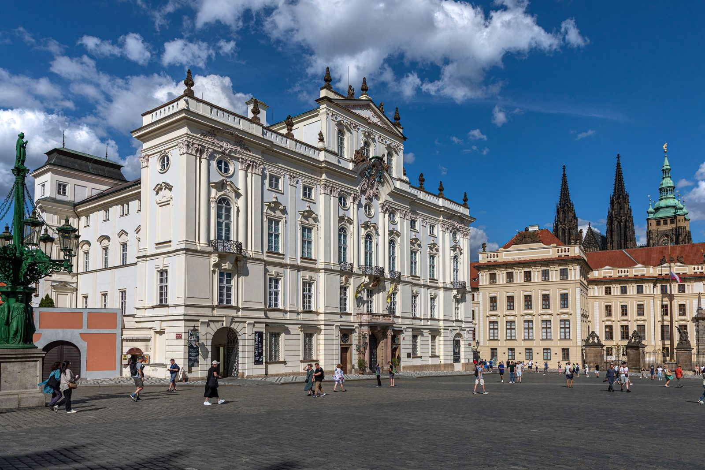
Le Palais archiépiscopal Sur la place du Château, cette façade rococo blanche tranche avec la pierre sombre de la cathédrale qui se dresse juste derrière.
Le Château, vu depuis la Vltava Depuis les quais, la silhouette du Château domine toute la rive, avec ses flèches qui percent la ligne des toits.
Jardins et points de vue :les hauteurs du Château et Hradčany offrent plusieurs perspectives sur les toits de Prague et la Vltava.
ÉTAPE 06
Le cimetière juif — Josefov
J’y suis allé. La plupart des photos de ce lieu ont disparu ; il n’en reste heureusement que deux, mais elles suffisent à retrouver l’atmosphère. Plus de 12 000 pierres tombales, certaines du XVe siècle, empilées les unes sur les autres faute de place. Tombe du Rabbi Loew, figure centrale de la légende du Golem.
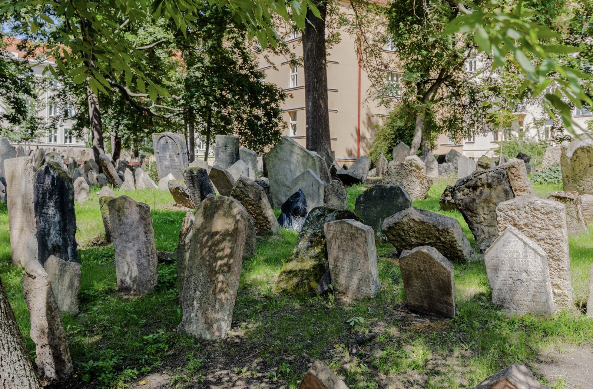
Les pierres serrées les unes contre les autres Faute de place, les tombes ont été empilées sur plusieurs niveaux au fil des siècles — jusqu’à douze couches par endroits.
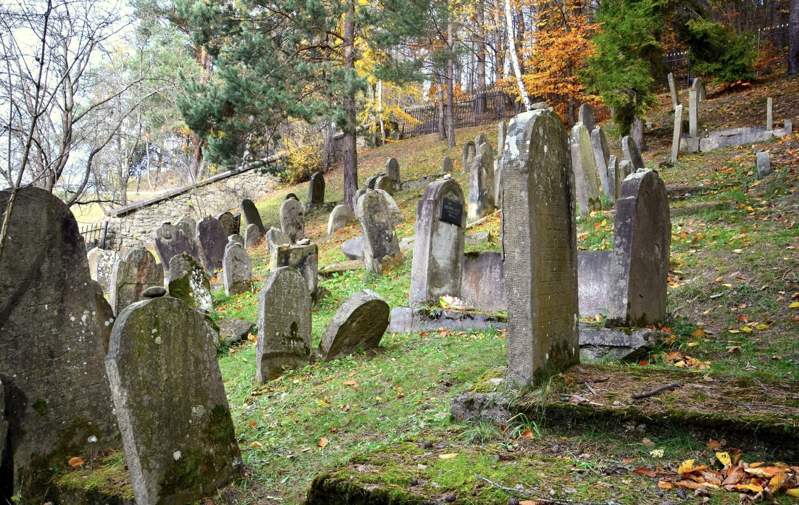
Une autre partie du cimetière, en automne Les feuilles mortes et la pente du terrain donnent à ce coin du cimetière une atmosphère plus sauvage encore.
Couverture pour les épaules demandée. Respectez le silence du lieu.
ÉTAPE 07
Prague en mouvement
Prague, ce n’est pas seulement des monuments : c’est aussi l’expérience du voyage elle-même. Sous les pavés de la Vieille Ville, le métro pragois offre une autre façon de découvrir la ville.
Sous les rues de Prague Descente dans le métro pragois, à la station Staroměstská : un long escalator incurvé, très profond, à l’architecture caractéristique.
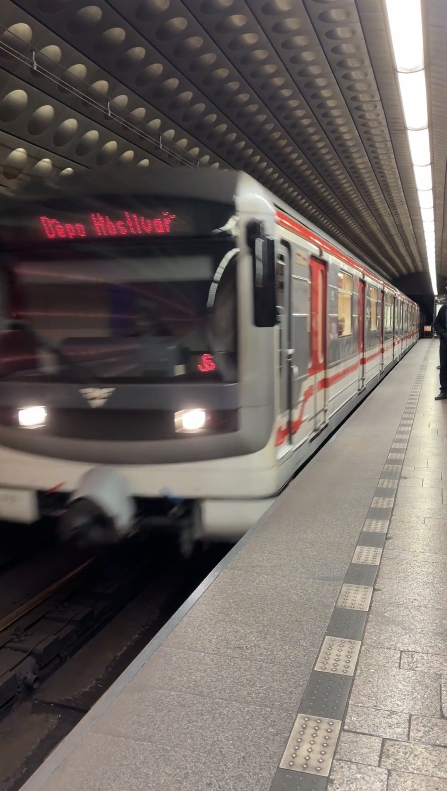
Une rame vers Depo Hostivař Ce terminus de la ligne A, ouvert en 2006, a été installé dans un ancien dépôt : les derniers mètres de la ligne y sont aériens. La rame elle-même, un modèle 81-71M, est une version modernisée d’un matériel soviétique retiré du service en 2009.
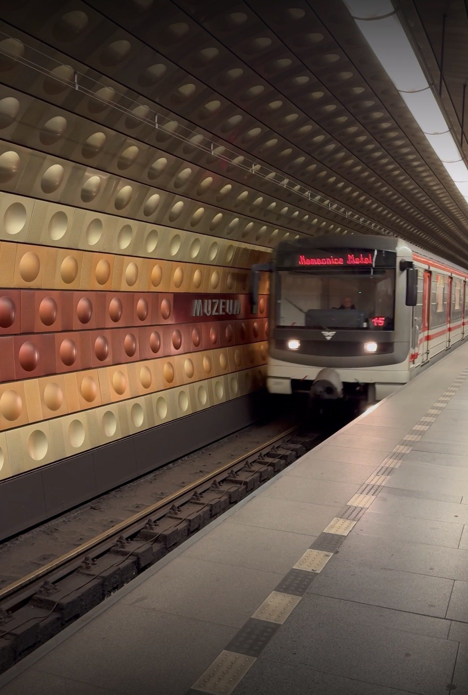
Station Muzeum, ligne A Point de jonction des lignes A et C sous la place Venceslas, reconnaissable à son revêtement d’aluminium ocre et rouille. Le terminus « Nemocnice Motol » affiché ici marque l’extrémité ouest de la ligne A, ouverte en 2015.
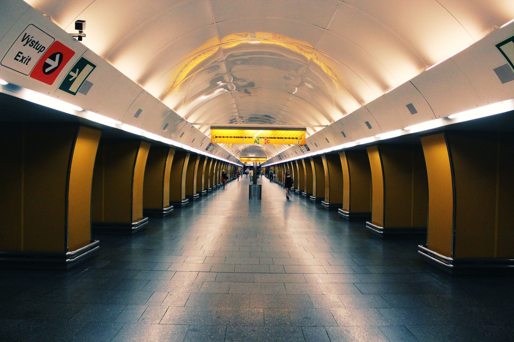
Couloir de la ligne B Le plan affiché ici montre le trajet complet de la ligne B, de Zličín à Černý Most — la plus longue des trois lignes, ouverte en 1985 puis étendue à son tracé actuel en 1998.
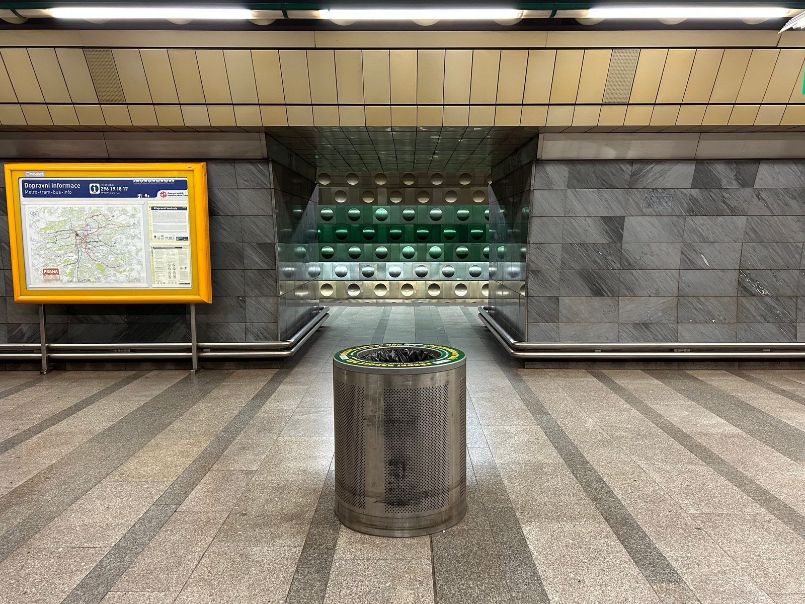
Un couloir aux tons verts Ce revêtement d’aluminium à alvéoles vertes évoque la station Malostranská, sur la ligne A — un vert que certains associent aux jardins royaux voisins, sans certitude absolue.
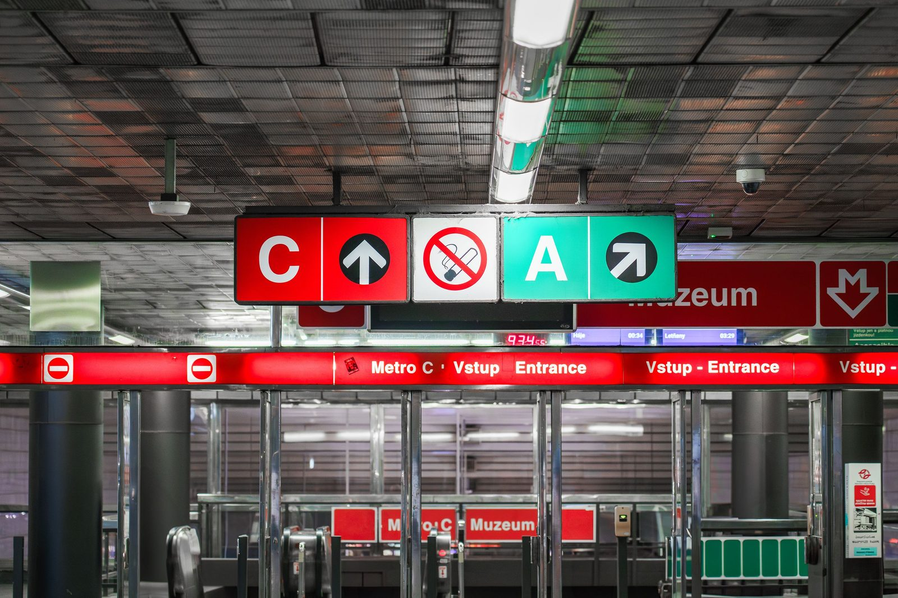
La signalétique de Muzeum Ici, la station est identifiable avec certitude : le rouge de la ligne C et le vert de la ligne A se croisent sous la place Venceslas.
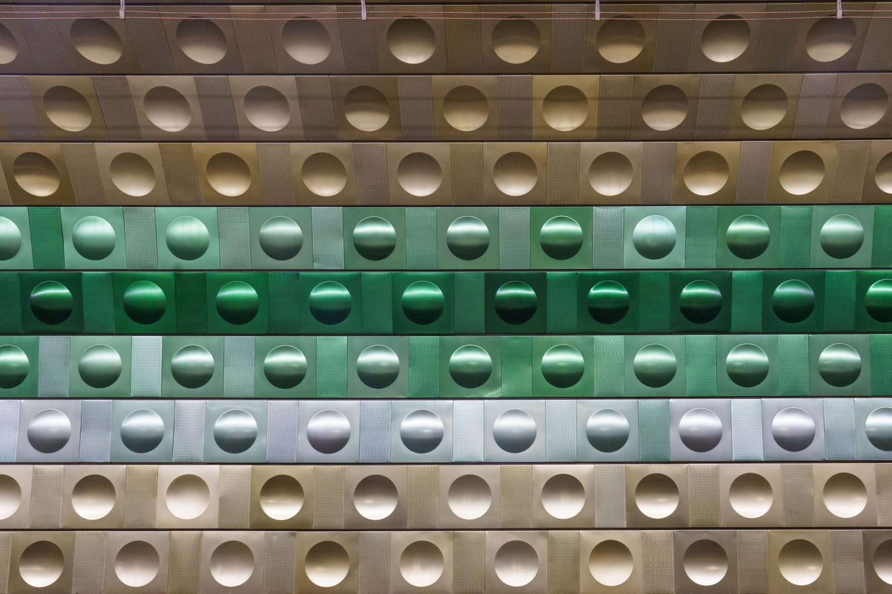
Aluminium à hémisphères Signature esthétique des stations de la ligne A construites entre 1973 et 1978 : chaque station affiche sa propre couleur, reconnaissable d’un simple coup d’œil depuis la rame.
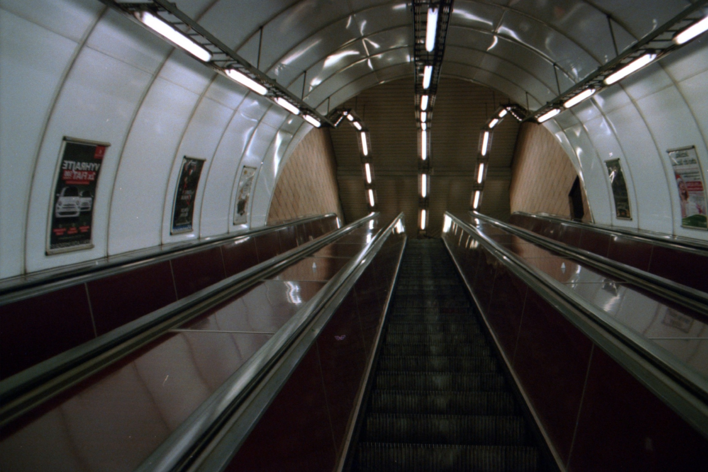
Un escalator sans fin Station non identifiée avec certitude, mais bien pragoise : les affiches en tchèque le confirment. Les stations profondes du réseau sont réputées pour leurs escalators interminables, certains dépassant 80 mètres.
Ce détour par le métro rappelle que le charme de Prague ne se limite pas à ses monuments : il se niche aussi dans ces instants plus ordinaires du voyage.
Quelle monnaie utiliser ?
La couronne tchèque (CZK). Les euros sont rarement acceptés ou proposés à un mauvais taux. Une carte Visa/Mastercard sans frais et un peu de cash sont pratiques.
Prague est-elle sûre ?
La ville est globalement très sûre. Comme dans toute zone touristique, attention aux pickpockets et aux taxis non officiels.
Y a-t-il du racisme ou de la xénophobie ?
Le récit d’origine mentionne des expériences rapportées par certains voyageurs noirs, arabes ou asiatiques : regards insistants, refus d’entrée dans certains bars ou contrôles plus fréquents. Ce n’est pas systématique.
Les bars : lesquels éviter / lesquels aimer ?
Le récit conseille d’éviter les bars ultra-touristiques autour de la Place de la Vieille Ville et de regarder plutôt du côté des beer gardens de Letná ou Riegrovy sady, ainsi que Vinohrady et Žižkov.
Quel aéroport et comment rejoindre le centre ?
Aéroport Václav Havel (PRG). Le récit indique le bus 119 puis le métro Nádraží Veleslavín, pour environ 40–60 minutes.
Quel budget ?
Le récit indique un budget moyen de 60–100 € par jour, avec bière locale autour de 1,5–3 €, repas 8–15 € et attractions 10–20 €.
Transports et commodités ?
Excellent réseau métro/tram/bus. Eau du robinet potable, Wi-Fi largement disponible et toilettes publiques souvent payantes.
Meilleure période pour visiter ?
Le récit recommande avril–juin et septembre–octobre. L’hiver est associé aux marchés de Noël, tandis que juillet–août correspond à la haute saison.
Pour un week-end parfait
Samedi : Vieille Ville → Horloge → Pont Charles → Malá Strana → Château au coucher du soleil.
Dimanche : Lever de soleil sur le pont → Quartier juif → métro et dernière balade → départ.
Prague ne se visite pas. Elle se ressent.
Un carnet de voyage par twagirumukiza.
1/1
← → naviguer · molette ou pincer pour zoomer · double-clic · Échap pour fermer